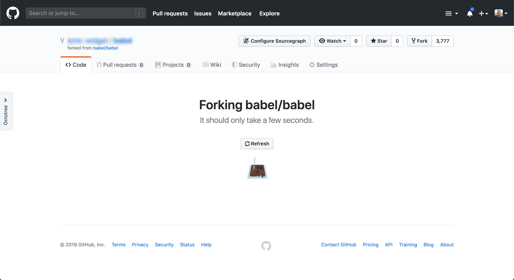
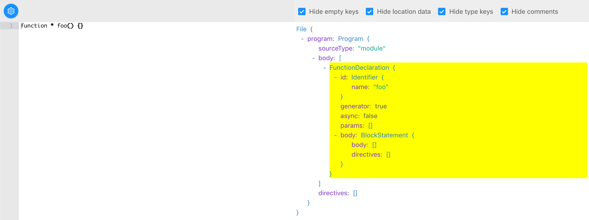
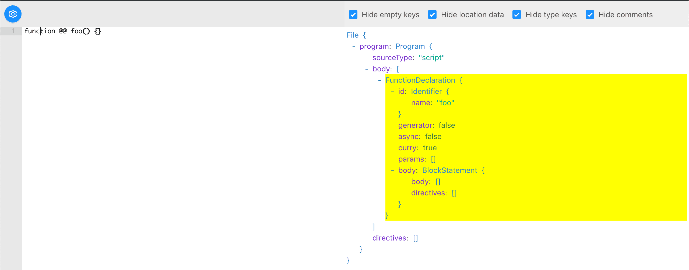
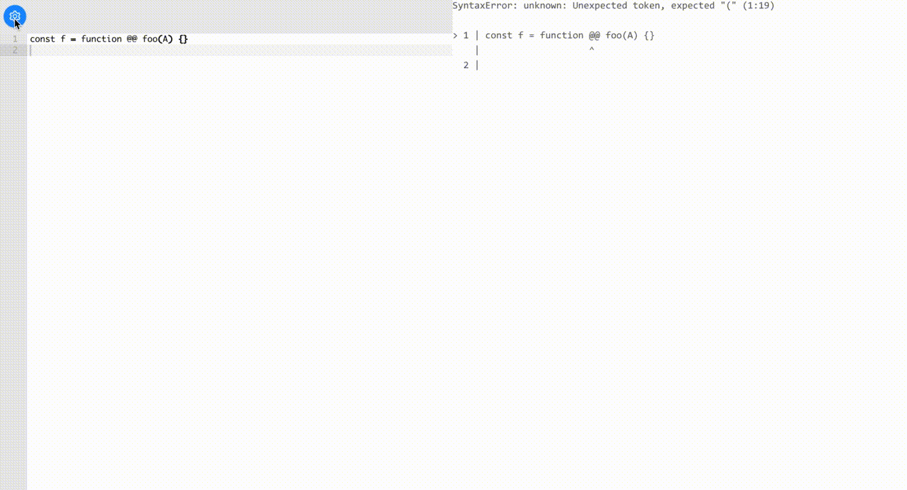

Following my previous post on writing a custom babel transformation, today I am going to show you how you can create a custom JavaScript syntax with Babel.
Overview
Let me show you what we will achieve at the end of this article:
// '@@' makes the function `foo` curried
function @@ foo(a, b, c) {
return a + b + c;
}
console.log(foo(1, 2)(3)); // 6
We are going to create a curry function syntax @@. The syntax is like the generator function, except you place @@ instead of * in between the function keyword and the function name, eg function @@ name(arg1, arg2).
In this example, you can have partial application with the function foo. Calling foo with the number of parameters less than the arguments required will return a new function of the remaining arguments:
foo(1, 2, 3); // 6
const bar = foo(1, 2); // (n) => 1 + 2 + n
bar(3); // 6
The reason I choose
@@is that you can't have@in a variable name, sofunction@@foo(){}is still a valid syntax. And the "operator"@is used for decorator functions but I wanted to use something entirely new, thus@@.
To achieve this, we are going to:
- Fork the babel parser
- Create a custom babel transformation plugin
Sounds impossible 😨?
Don't worry, I will guide you through every step. Hopefully, at the end of this article, you will be the babel master amongst your peers. 🤠
Fork the babel
Head over to babel's Github repo, click the "Fork" button located at the top left of the page.

If this is your first time forking a popular open-source project, congratulations! 🎉
Clone your forked babel to your local workspace and set it up:
$ git clone https://github.com/tanhauhau/babel.git
# set up
$ cd babel
$ make bootstrap
$ make build
Meanwhile, let me briefly walk you through how the babel repository is organised.
Babel uses a monorepo structure, all the packages, eg: @babel/core, @babel/parser, @babel/plugin-transform-react-jsx, etc are in the packages/ folder:
- doc
- packages
- babel-core
- babel-parser
- babel-plugin-transform-react-jsx
- ...
- Gulpfile.js
- Makefile
- ...
**Trivia:** Babel uses [Makefile](https://opensource.com/article/18/8/what-how-makefile) for automating tasks. For build task, such as `make build`, it will use [Gulp](https://gulpjs.com) as the task runner.
Crash Course on Parsing Code to AST
Before we proceed, if you are unfamiliar with parsers and Abstract Syntax Tree (AST), I highly recommend to checkout Vaidehi Joshi's Leveling Up One’s Parsing Game With ASTs.
To summarise, this is what happened when babel is parsing your code:
- Your code as a
stringis a long list of characters:f, u, n, c, t, i, o, n, , @, @, f, ... - The first step is called tokenization, where babel scans through each character and creates tokens, like
function, @@, foo, (, a, ... - The tokens then pass through a parser for Syntax analysis, where babel creates an AST based on JavaScript language specification.
If you want to learn more in-depth on compilers in general, Robert Nystrom's Crafting Interpreters is a gem.
Don't get scared of by the word **compiler**, it is nothing but parsing your code and generate XXX out of it. XXX could be machine code, which is the compiler most of us have in mind; XXX could be JavaScript compatible with older browsers, which is the case for Babel.
Our custom babel parser
The folder we are going to work on is packages/babel-parser/:
- src/
- tokenizer/
- parser/
- plugins/
- jsx/
- typescript/
- flow/
- ...
- test/
We've talked about tokenization and parsing, now it's clear where to find the code for each process. plugins/ folder contains plugins that extend the base parser and add custom syntaxes, such as jsx and flow.
Let's do a Test-driven development (TDD). I find it easier to define the test case then slowly work our way to "fix" it. It is especially true in an unfamiliar codebase, TDD allows you to "easily" point out code places you need to change.
// filename: packages/babel-parser/test/curry-function.js
import { parse } from '../lib';
function getParser(code) {
return () => parse(code, { sourceType: 'module' });
}
describe('curry function syntax', function() {
it('should parse', function() {
expect(getParser(`function @@ foo() {}`)()).toMatchSnapshot();
});
});
You can run TEST_ONLY=babel-parser TEST_GREP="curry function" make test-only to run tests for babel-parser and see your failing case:
SyntaxError: Unexpected token (1:9)
at Parser.raise (packages/babel-parser/src/parser/location.js:39:63)
at Parser.raise [as unexpected] (packages/babel-parser/src/parser/util.js:133:16)
at Parser.unexpected [as parseIdentifierName] (packages/babel-parser/src/parser/expression.js:2090:18)
at Parser.parseIdentifierName [as parseIdentifier] (packages/babel-parser/src/parser/expression.js:2052:23)
at Parser.parseIdentifier (packages/babel-parser/src/parser/statement.js:1096:52)
If you find scanning through all the test cases takes time, you can directly call `jest` to run the test:BABEL_ENV=test node_modules/.bin/jest -u packages/babel-parser/test/curry-function.js
Our parser found 2 seemingly innocent @ tokens at a place where they shouldn't be present.
How do I know that? Let's start the watch mode, make watch, wear our detective cap 🕵️ and start digging!
Tracing the stack trace, led us to packages/babel-parser/src/parser/expression.js where it throws this.unexpected().
Let us add some console.log:
// filename: packages/babel-parser/src/parser/expression.js
parseIdentifierName(pos: number, liberal?: boolean): string {
if (this.match(tt.name)) {
// ...
} else {
console.log(this.state.type); // current token
console.log(this.lookahead().type); // next token
throw this.unexpected();
}
}
As you can see, both tokens are @ token:
TokenType {
label: '@',
// ...
}
How do I know this.state.type and this.lookahead().type will give me the current and the next token?
Well, I'll explained them later.
Let's recap what we've done so far before we move on:
- We've written a test case for
babel-parser - We ran
make test-onlyto run the test case - We've started the watch mode via
make watch - We've learned about parser state, and console out the current token type,
this.state.type
Here's what we are going to do next:
If there's 2 consecutive @, it should not be separate tokens, it should be a @@ token, the new token we just defined for our curry function
A new token: '@@'
Let's first look at where a token type is defined: packages/babel-parser/src/tokenizer/types.js.
Here you see a list of tokens, so let's add our new token definition in as well:
// filename: packages/babel-parser/src/tokenizer/types.js
export const types: { [name: string]: TokenType } = {
// ...
at: new TokenType('@'),
// highlight-next-line
atat: new TokenType('@@'),
};
Next, let's find out where the token gets created during tokenization. A quick search on tt.at within babel-parser/src/tokenizer lead us to packages/babel-parser/src/tokenizer/index.js
Well, token types are import as `tt` throughout the babel-parser.
Let's create the token tt.atat instead of tt.at if there's another @ succeed the current @:
// filename: packages/babel-parser/src/tokenizer/index.js
getTokenFromCode(code: number): void {
switch (code) {
// ...
case charCodes.atSign:
// highlight-start
// if the next character is a `@`
if (this.input.charCodeAt(this.state.pos + 1) === charCodes.atSign) {
// create `tt.atat` instead
this.finishOp(tt.atat, 2);
} else {
this.finishOp(tt.at, 1);
}
return;
// highlight-end
// ...
}
}
If you run the test again, you will see that the current token and the next token has changed:
// current token
TokenType {
label: '@@',
// ...
}
// next token
TokenType {
label: 'name',
// ...
}
Yeah! It looks good and lets move on. 🏃
The new parser
Before we move on, let's inspect how generator functions are represented in AST:

As you can see, a generator function is represented by the generator: true attribute of a FunctionDeclaration.
Similarly, we can add a curry: true attribute of the FunctionDeclaration too if it is a curry function:

We have a plan now, let's implement it.
A quick search on "FunctionDeclaration" leads us to a function called parseFunction in packages/babel-parser/src/parser/statement.js, and here we find a line that sets the generator attribute, let's add one more line:
// filename: packages/babel-parser/src/parser/statement.js
export default class StatementParser extends ExpressionParser {
// ...
parseFunction<T: N.NormalFunction>(
node: T,
statement?: number = FUNC_NO_FLAGS,
isAsync?: boolean = false
): T {
// ...
node.generator = this.eat(tt.star);
// highlight-next-line
node.curry = this.eat(tt.atat);
}
}
If you run the test again, you will be amazed that it passed!
PASS packages/babel-parser/test/curry-function.js
curry function syntax
✓ should parse (12ms)
That's it? How did we miraculously fix it?
I am going to briefly explain how parsing works, and in the process hopefully, you understood what that one-liner change did.
How parsing works
With the list of tokens from the tokenizer, the parser consumes the token one by one and constructs the AST. The parser uses the language grammar specification to decide how to use the tokens, which token to expect next.
The grammar specification looks something like this:
...
ExponentiationExpression -> UnaryExpression
UpdateExpression ** ExponentiationExpression
MultiplicativeExpression -> ExponentiationExpression
MultiplicativeExpression ("*" or "/" or "%") ExponentiationExpression
AdditiveExpression -> MultiplicativeExpression
AdditiveExpression + MultiplicativeExpression
AdditiveExpression - MultiplicativeExpression
...
It explains the precedence of each expressions/statements. For example, an AdditiveExpression is made up of either:
- a
MultiplicativeExpression, or - an
AdditiveExpressionfollowed by+operator token followed byMultiplicativeExpression, or - an
AdditiveExpressionfollowed by-operator token followed byMultiplicativeExpression.
So if you have an expression 1 + 2 * 3, it will be like:
(AdditiveExpression "+" 1 (MultiplicativeExpression "*" 2 3))
instead of
(MultiplicativeExpression "*" (AdditiveExpression "+" 1 2) 3)
With these rules, we translate them into parser code:
class Parser {
// ...
parseAdditiveExpression() {
const left = this.parseMultiplicativeExpression();
// if the current token is `+` or `-`
if (this.match(tt.plus) || this.match(tt.minus)) {
const operator = this.state.type;
// move on to the next token
this.nextToken();
const right = this.parseMultiplicativeExpression();
// create the node
this.finishNode(
{
operator,
left,
right,
},
'BinaryExpression'
);
} else {
// return as MultiplicativeExpression
return left;
}
}
}
This is a made-up code that oversimplifies what babel have, but I hope you get the gist of it.
As you can see here, the parser is recursively in nature, and it goes from the lowest precedence to the highest precedence expressions/statements. Eg: parseAdditiveExpression calls parseMultiplicativeExpression, which in turn calls parseExponentiationExpression, which in turn calls ... . This recursive process is called the Recursive Descent Parsing.
this.eat, this.match, this.next
If you have noticed, in my examples above, I used some utility function, such as this.eat, this.match, this.next, etc. These are babel parser's internal functions, yet they are quite ubiquitous amongst parsers as well:
this.matchreturns abooleanindicating whether the current token matches the conditionthis.nextmoves the token list forward to point to the next tokenthis.eatreturn whatthis.matchreturns and ifthis.matchreturnstrue, will dothis.nextthis.eatis commonly used for optional operators, like*in generator function,;at the end of statements, and?in typescript types.
this.lookaheadget the next token without moving forward to make a decision on the current node
If you take a look again the parser code we just changed, it's easier to read it in now.
// filename: packages/babel-parser/src/parser/statement.js
export default class StatementParser extends ExpressionParser {
parseStatementContent(/* ...*/) {
// ...
// NOTE: we call match to check the current token
if (this.match(tt._function)) {
this.next();
// NOTE: function statement has a higher precendence than a generic statement
this.parseFunction();
}
}
// ...
parseFunction(/* ... */) {
// NOTE: we call eat to check whether the optional token exists
node.generator = this.eat(tt.star);
// highlight-next-line
node.curry = this.eat(tt.atat);
node.id = this.parseFunctionId();
}
}
I know I didn't do a good job explaining how a parser works. Here are some resources that I learned from, and I highly recommend them:
- Crafting Interpreters by Robert Nystrom
- Free Udacity course: "Compilers: Theory and Practice", offered by Georgia Tech
Side Note: You might be curious how am I able to visualize the custom syntax in the Babel AST Explorer, where I showed you the new "curry" attribute in the AST.
That's because I've added a new feature in the Babel AST Explorer where you can upload your custom parser!
If you go to packages/babel-parser/lib, you would find the compiled version of your parser and the source map. Open the drawer of the Babel AST Explorer, you will see a button to upload a custom parser. Drag the packages/babel-parser/lib/index.js in and you will be visualizing the AST generated via your custom parser!

Our babel plugin
With our custom babel parser done, let's move on to write our babel plugin.
But maybe before that, you may have some doubts on how are we going to use our custom babel parser, especially with whatever build stack we are using right now?
Well, fret not. A babel plugin can provide a custom parser, which is documented on the babel website
// filename: babel-plugin-transformation-curry-function.js
import customParser from './custom-parser';
export default function ourBabelPlugin() {
return {
parserOverride(code, opts) {
return customParser.parse(code, opts);
},
};
}
Since we forked out the babel parser, all existing babel parser options or built-in plugins will still work perfectly.
With this doubt out of the way, let see how we can make our curry function curryable? (not entirely sure there's such word)
Before we start, if you have eagerly tried to add our plugin into your build system, you would notice that the curry function gets compiled to a normal function.
This is because, after parsing + transformation, babel will use @babel/generator to generate code from the transformed AST. Since the @babel/generator has no idea about the new curry attribute we added, it will be omitted.
If one day curry function becomes the new JavaScript syntax, you may want to make a pull request to add one more line here!
Ok, to make our function curryable, we can wrap it with a currying helper higher-order function:
function currying(fn) {
const numParamsRequired = fn.length;
function curryFactory(params) {
return function (...args) {
const newParams = params.concat(args);
if (newParams.length >= numParamsRequired) {
return fn(...newParams);
}
return curryFactory(newParams);
}
}
return curryFactory([]);
}
If you want to learn how to write a currying function, you can read this Currying in JS by Shirsh Zibbu
So when we transform our curry function, we can transform it into the following:
// from
function @@ foo(a, b, c) {
return a + b + c;
}
// to
const foo = currying(function foo(a, b, c) {
return a + b + c;
})
Let's first ignore function hoisting in JavaScript, where you can call
foobefore it is defined.
If you have read my step-by-step guide on babel transformation, writing this transformation should be manageable:
// filename: babel-plugin-transformation-curry-function.js
export default function ourBabelPlugin() {
return {
// ...
// highlight-start
visitor: {
FunctionDeclaration(path) {
if (path.get('curry').node) {
// const foo = curry(function () { ... });
path.node.curry = false;
path.replaceWith(
t.variableDeclaration('const', [
t.variableDeclarator(
t.identifier(path.get('id.name').node),
t.callExpression(t.identifier('currying'), [
t.toExpression(path.node),
])
),
])
);
}
},
},
// highlight-end
};
}
The question is how do we provide the currying function?
There are 2 ways:
1. Assume currying has been declared in the global scope.
Basically, your job is done here.
If currying is not defined, then when executing the compiled code, the runtime will scream out "currying is not defined", just like the "regeneratorRuntime is not defined".
So probably you have to educate the users to install currying polyfills in order to use your babel-plugin-transformation-curry-function.
2. Use the @babel/helpers
You can add a new helper to @babel/helpers, which of course you are unlikely to merge that into the official @babel/helpers, so you would have to figure a way to make @babel/core to resolve to your @babel/helpers:
// filename: package.json
{
"resolutions": {
"@babel/helpers": "7.6.0--your-custom-forked-version",
}
}
Disclaimer: I have not personally tried this, but I believe it will work. If you encountered problems trying this, DM me, I am very happy to discuss it with you.
Adding a new helper function into @babel/helpers is very easy.
Head over to packages/babel-helpers/src/helpers.js and add a new entry:
helpers.currying = helper("7.6.0")`
export default function currying(fn) {
const numParamsRequired = fn.length;
function curryFactory(params) {
return function (...args) {
const newParams = params.concat(args);
if (newParams.length >= numParamsRequired) {
return fn(...newParams);
}
return curryFactory(newParams);
}
}
return curryFactory([]);
}
`;
The helper tag function specifies the @babel/core version required. The trick here is to export default the currying function.
To use the helper, just call the this.addHelper():
// ...
path.replaceWith(
t.variableDeclaration('const', [
t.variableDeclarator(
t.identifier(path.get('id.name').node),
t.callExpression(this.addHelper("currying"), [
t.toExpression(path.node),
])
),
])
);
The this.addHelper will inject the helper at the top of the file if needed, and returns an Identifier to the injected function.
Closing Note
We've seen how we can modify the babel parser function, write our own babel transform plugin (which was brief mainly because I have a detailed cover in my previous post), a brief touch on @babel/generator and also how we can add helper functions via @babel/helpers.
Along the way, we had a crash course on how a parser works, which I will provide the links to further reading at the bottom.
The steps we've gone through above is similar to part of the TC39 proposal process when defining a new JavaScript specification. When proposing a new specification, the champion of the proposal usually write polyfills or forked out babel to write proof-of-concept demos. As you've seen, forking a parser or writing polyfills is not the hardest part of the process, but to define the problem space, plan and think through the use cases and edge cases, and gather opinions and suggestions from the community. To this end, I am grateful to the proposal champion, for their effort in pushing the JavaScript language forward.
Finally, if you want to see the code we've done so far in a full picture, you can check it out from Github.
Editor's Note
I've worked on the babel repository for a while, yet I've never added a new syntax to the babel parser before. Most of my contributions were just fixing bugs and specs compliance feature.
Yet this idea of creating a new syntax has been in my mind for a while. So I took the chance of writing a blog to try it out. It is an exhilarating experience to see it work as expected.
Having the ability to manipulate the syntax of the language you are writing is invigorating. It empowers us the possibility of writing less code or more straightforward code and shifts that complexity to compile time. Just as how async-await solves the callback hell and promise-chaining hell.
If this article inspires you to some great idea, and you wish to discuss it with somebody, you are always more than welcome to reach out to me through Twitter.
Further Reading
About compilers:
- Crafting Interpreters by Robert Nystrom
- Free Udacity course: "Compilers: Theory and Practice", offered by Georgia Tech
- Leveling Up One’s Parsing Game With ASTs by Vaidehi Joshi
Misc: